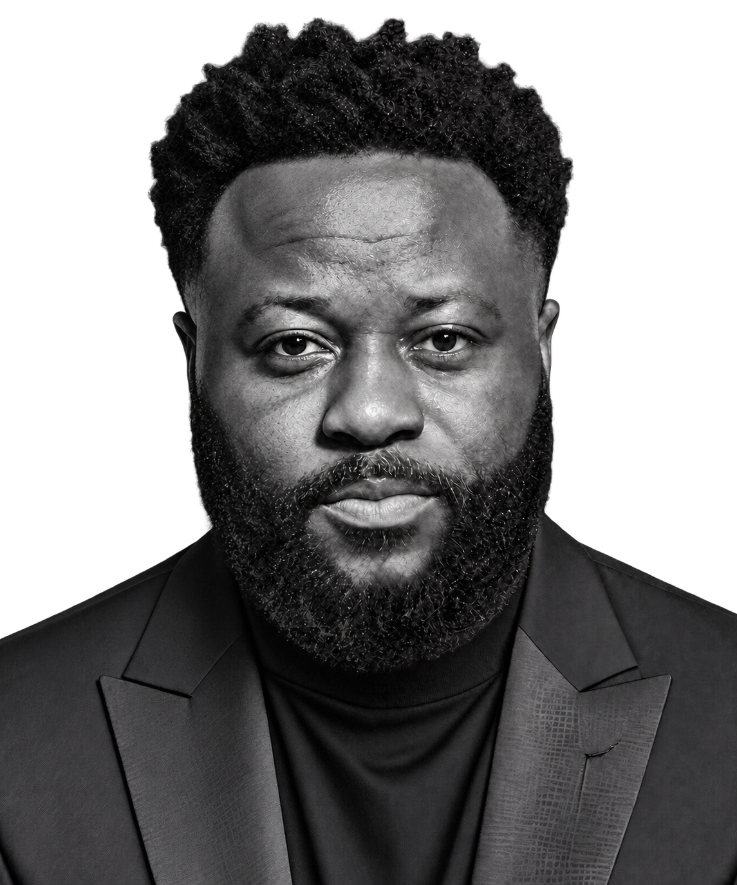
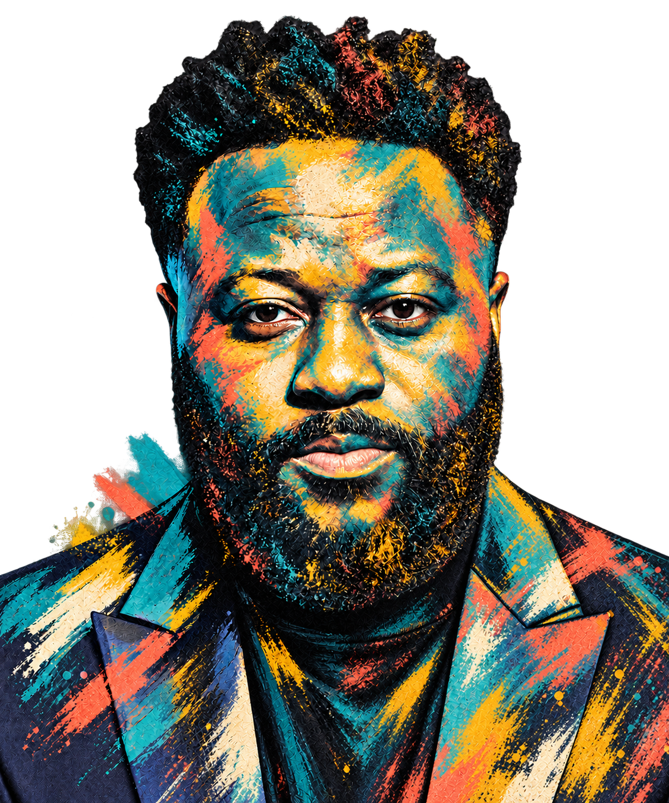

LET’S CONNECT
contact.
Have a product challenge? Get in touch by email or social media. I’m happy to discuss product management, UX/UI and digital delivery.


LET’S CONNECT
Have a product challenge? Get in touch by email or social media. I’m happy to discuss product management, UX/UI and digital delivery.

